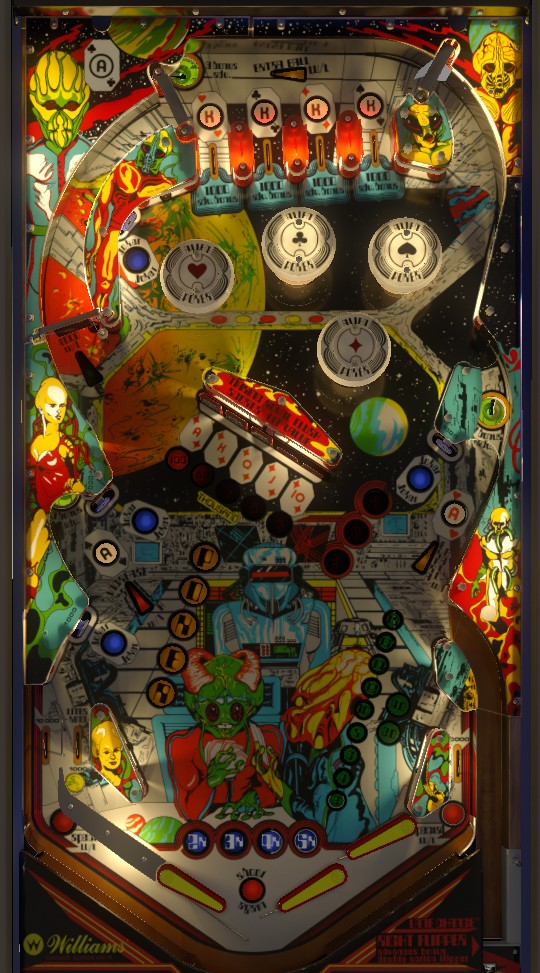

The best strategy for pure points in competition play is to complete three sets of King lanes at the top of the playfield to advance the jackpot multiplier to 4X, then complete the center drop targets in order from right to left to collect the royal flush jackpot.
Bonus is advanced by King lanes and Ace saucers. Bonus multiplier is advanced by lit blue targets.
Extra balls and specials are usually off for tournament play, but if you're playing casually, they can be lit by completing 3 or 5 sets of Ace saucers, respectively.
The below picture of Alien Poker's playfield was taken from the VPX recreation by Bord, UnclePaulie, and HauntFreaks.
There are 4 king lanes at the top of the playfield. Going through any lane scores 1,000 points and 1 bonus advance, and lights both that lane and the corresponding suit bumper if they were not already lit. The position of the lit king lanes and bumpers can be rotated via lane change with the right flipper only.
Completing the King lanes advances the red multiplier shown on the middle-right of the playfield. This multiplier does NOT get applied to the end of ball bonus: it is only applied to the value of the next Royal Flush, discussed more in the next section.
Going through the left in lane spots one King.
When the red multiplier is at 3X or 4X, the spinner on the left side of the playfield is lit for 1,000 points per spin instead of 100. This can be okay points, but there are better uses of your time in this game. If the spinner is lit when the ball is in the shooter lane, though, plunge as hard as possible to get as many lit spins on the plunge as you can (while also being mindful of earning a King at the top lanes).
The 5-bank of drop targets in the center of the playfield is labelled A-K-Q-J-10. Completing these targets in order from right to left - in increasing order of card rank - scores the current Royal Flush value. The Royal Flush value starts at 100,000 points at the beginning of any ball. If a drop target is hit out of order, the Royal Flush value decreases by 20,000 points and that individual target will reset. When a correct drop target is hit, that target will stay down and the Royal Flush value will increase by 20,000. (If two targets are hit at the same time and one of them is correct, it's not consistent as to whether one or both will count, so avoid this when possible even though it sounds more efficient.)
After the Ace target is hit in proper sequence, the Royal Flush value is multiplied by the lit red multiplier and scored. This can be as much as 4x 100,000 = 400,000 points, making this strategy the best when going for high scores: complete three sets of Kings to advance the red multiplier to 4X, then try to cash in a max value Royal Flush.
Take note of which flipper it is best to shoot each target from. In general, avoid shooting the 10 and J from the upper right flipper, and avoid shooting the Q and K from the lower right flipper, but your Alien Poker may like or dislike different angles instead: only shoot for Royal Flush targets if you're confident you can do so without a high risk of sending the ball straight into the left out lane.
Shooting the Ace of Spades saucer on the lower left will advance the Royal Flush value by 20,000 points if it is not already maxed out.
On default settings, the Royal Flush value is set to the maximum of 100,000 points at the beginning of the ball, but drop target progress and red multipliers are carried over. Therefore, as an absolute last resort, if the red multiplier is high and only the Ace target is left but the Royal Flush value is low, a semi-intentional drain will reset the Royal Flush value and guarantee max value for that last target. Carefully weigh the consequences of doing this though, as you are draining an entire ball, and the value can be built up again without draining by hitting the Ace of Spades saucer a few times.
There are four: two on the lower left on either side of the Ace of Spades saucer, one in the middle right near the Ace of Hearts saucer, and one in the upper left of the bumper area. Hitting any target scores 1,000 points. One of the four will be lit blue at random; hitting that target will advance the blue multiplier, which IS applied to the end of ball bonus. Hitting a lit Joker will then move the light to a different Joker.
When the blue multiplier is maxed out at 5X, the selected Joker will be flashing instead of lit- this just signifies that that target scores 10,000 points instead of 1,000.
There are three: the Ace of Spades on the lower left, the Ace of Hearts in the middle right, and the Ace of Clubs in the far back of the game. All three can be shot directly; the Clubs saucer requires a very strong shot that goes just to the right of the bumpers and curves up over the King lanes. Shooting any Ace saucer scores 500 points and 3 bonus advance, and also lights that Ace if not already lit.
Lighting all three Ace saucers awards a letter in POKER, seen in the playfield. Lighting the K in POKER lights the Ace of Hearts and the Ace of Clubs for extra ball. Finishing POKER lights the out lanes (alternately) for special. As far as I have seen and heard, Alien Poker is played in tournaments with extra balls off and no point value for extra balls or specials, so don't try to spell POKER intentionally during competition play.
The Ace of Spades is lit to increase the value of the Royal Flush by 20,000 points whenever said value is not already maxed out.
The top King lanes each score 1 bonus advance. Any Ace saucer, lit or not, scores 3 bonus advance. Notice that each advance is worth 2,000 in base bonus, unlike many other games of the era where each advance is 1,000. Max base bonus is 40+20+18 = 78,000 points.
Only the blue multiplier affects bonus: blue multiplier is advanced by hitting any lit Joker target. Max full bonus is 5x 78,000 = 390,000 points. Maxing out the bonus is only realistic if the left flipper is strong enough to reliably put the ball into the Ace of Clubs whenever it is returned to the top of the playfield.
Bonus value and bonus multiplier cannot be carried from ball to ball. There is no mid-ball bonus collect.
The left side of the table bottom is conventional. The out lane scores 10,000 points, and a special when lit. The in lane scores 1,000 points and spots a King. There is only one left flipper.
On the right, there are two flippers and no in lane. It is possible to scissor drain between the two flippers, so become comfortable with dead bouncing the ball off the right flippers. The ball can be trapped on the upper right flipper rather easily: extremely skilled players can also trap the ball on the lower right flipper by stage flipping, which only activates the lower flipper. Obviously, though, this is very risky and requires both a steady hand and a lot of familiarity with the exact machine being played.
The right out lane scores 10,000 points and special when lit, just like the left.
There is no one way gate blocking the shooter lane. If a ball bounces in just the right way, it can go back into this lane, which allows a replunge. Use this to grab a King lane and also to get some good risk-free spinner hits if the spinner is lit.
King lanes, Royal Flush target progress, lit spinner, and red multiplier are always carried from ball to ball.
POKER letters, lit Ace saucers, the Royal Flush value, and lit extra balls can be carried from ball to ball as settings within the game.